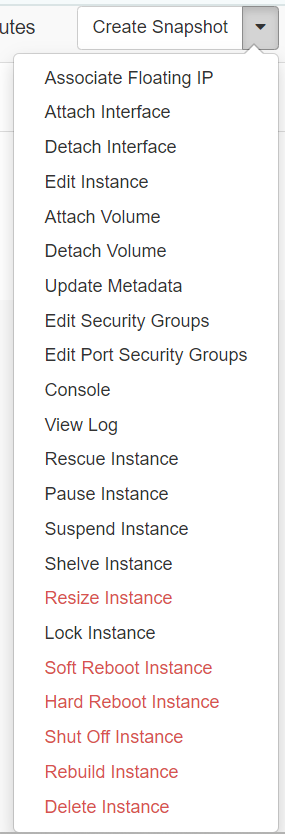
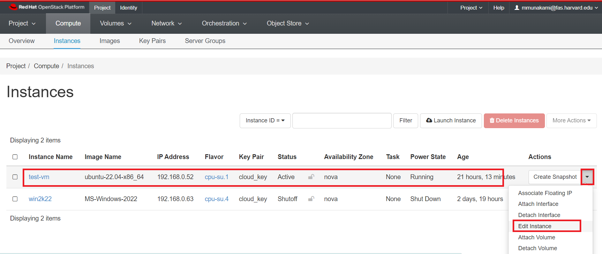
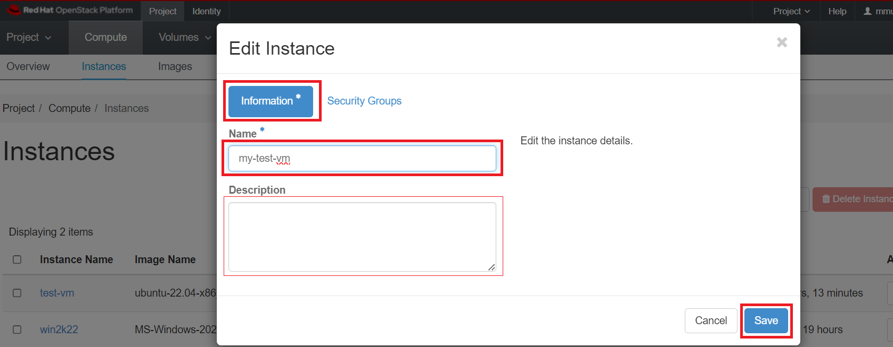
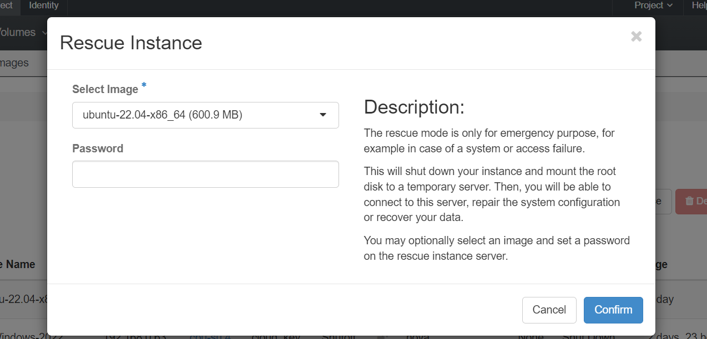
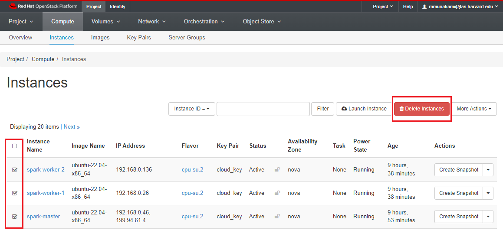

VM Management
RedHat OpenStack offers numerous functionalities for handling virtual machines, and comprehensive information can be found in the official OpenStack site user guide, please keep in mind that certain features may not be fully implemented at NERC OpenStack.
Instance Management Actions
After launching an instance (On the left side bar, click on Project -> Compute -> Instances), several options are available under the Actions menu located on the right hand side of your screen as shown here:

Renaming VM
Once a VM is created, its name is set based on user specified Instance Name
while launching an instance using Horizon dashboard or openstack server create ... command using openstack client.
To rename a VM, navigate to Project -> Compute -> Instances.
Select an instance.
In the menu list in the actions column, select "Edit Instance" by clicking on the arrow next to "Create Snapshot" as shown below:

Then edit the Name and also Description(Optional) in "Information" tab and save it:

Stopping and Starting
Virtual machines can be stopped and initiated using various methods, and these actions are executed through the openstack command with the relevant parameters.
-
Reboot is equivalent to powering down the machine and then restarting it. A complete boot sequence takes place and thus the machine returns to use in a few minutes.
Soft Reboot:
-
A soft reboot attempts a graceful shut down and restart of the instance. It sends an ACPI Restart request to the VM. Similar to sending a reboot command to a physical computer.
-
Click Action -> Soft Reboot Instance.
-
Status will change to
Reboot.
Hard Reboot:
-
A hard reboot power cycles the instance. This forcibly restart your VM. Similar to cycling the power on a physical computer.
-
Click Action -> Hard Reboot Instance.
-
Status will change to
Hard Reboot.
-
-
The
Pause&Resumefeature enables the temporary suspension of the VM. While in this state, the VM is retained in memory but doesn't receive any allocated CPU time. This proves handy when conducting interventions on a group of servers, preventing the VM from processing during the intervention.-
Click Action -> Pause Instance.
-
Status will change to
Paused. -
The Resume operation typically completes in less than a second by clicking Action -> Resume Instance.
-
-
The
Suspend&Resumefunction saves the VM onto disk and swiftly restores it (in less than a minute). This process is quicker than the stop/start method, and the VM resumes from where it was suspended, avoiding a new boot cycle.-
Click Action -> Suspend Instance.
-
Status will change to
Suspended. -
The Resume operation typically completes in less than a second by clicking Action -> Resume Instance.
-
-
Shelve&Unshelve-
Click Action -> Shelve Instance.
-
When shelved it stops all computing, stores a snapshot of the instance. The shelved instances are already imaged as part of the shelving process and appear in Project -> Compute -> Images as "
_shelved". -
We strongly recommend detaching volumes before shelving.
-
Status will change to
Shelved Offloaded. -
To unshelve the instance, click Action -> Unshelve Instance.
-
-
Shut Off&Start Instance-
Click Action -> Shut Off Instance.
-
When shut off it stops active computing, consuming fewer resources than a Suspend.
-
Status will change to
Shutoff. -
To start the shut down VM, click Action -> Start Instance.
-
Using openstack client commands
The above mentioned actions can all be performed running the openstack client commands with the following syntax:
openstack server <operation> <INSTANCE_NAME_OR_ID>
such as,
openstack server shutoff my-vm
openstack server restart my-vm
Pro Tip
If your instance name <INSTANCE_NAME_OR_ID> includes spaces, you need to
enclose the name of your instance in quotes, i.e. "<INSTANCE_NAME_OR_ID>"
For example: openstack server restart "My Test Instance"
Create Snapshot
-
Click Action -> Create Snapshot.
-
Instances must have status
Active,Suspended, orShutoffto create snapshot. -
This creates an image template from a VM instance also known as "Instance Snapshot" as described here.
-
The menu will automatically shift to Project -> Compute -> Images once the image is created.
-
The sole distinction between an image directly uploaded to the image data service, glance and an image generated through a snapshot is that the snapshot-created image possesses additional properties in the glance database and defaults to being private.
Glance Image Service
Glance is a central image repository which provides discovering, registering, retrieving for disk and server images. More about this service can be found here.
Rescue a VM
There are instances where a virtual machine may encounter boot failure due to reasons like misconfiguration or issues with the system disk. To diagnose and address the problem, the virtual machine console offers valuable diagnostic information on the underlying cause.
Alternatively, utilizing OpenStack's rescue functions involves booting the
virtual machine using the original image, with the system disk provided as a
secondary disk. This allows manipulation of the disk, such as using fsck to
address filesystem issues or mounting and editing the configuration.
Important Note
We cannot rescue a volume-backed instance that means ONLY instance running using Ephemeral disk can be rescued. Also, this procedure has not been tested for Windows virtual machines.
VMs can be rescued using either the OpenStack dashboard by clicking
Action -> Rescue Instance or via the openstack client using
openstack server rescue ... command.
If however, the virtual machine is no longer required and no data on the associated system or ephemeral disk needs to be preserved, the following command can be run:
openstack server rescue <INSTANCE_NAME_OR_ID>
or, using Horizon dashboard:
Navigate to Project -> Compute -> Instances.
Select an instance.
Click Action -> Rescue Instance.
When to use Rescue Instance
The rescue mode is only for emergency purpose, for example in case of a system or access failure. This will shut down your instance and mount the root disk to a temporary server. Then, you will be able to connect to this server, repair the system configuration or recover your data. You may optionally select an image and set a password on the rescue instance server.

Troubleshoot the disk
This will reboot the virtual machine and you can then log in using the key pair
previously defined. You will see two disks, /dev/vda which is the new system disk
and /dev/vdb which is the old one to be repaired.
ubuntu@my-vm:~$ lsblk
NAME MAJ:MIN RM SIZE RO TYPE MOUNTPOINTS
loop0 7:0 0 62M 1 loop /snap/core20/1587
loop1 7:1 0 79.9M 1 loop /snap/lxd/22923
loop2 7:2 0 47M 1 loop /snap/snapd/16292
vda 252:0 0 2.2G 0 disk
├─vda1 252:1 0 2.1G 0 part /
├─vda14 252:14 0 4M 0 part
└─vda15 252:15 0 106M 0 part /boot/efi
vdb 252:16 0 20G 0 disk
├─vdb1 252:17 0 19.9G 0 part
├─vdb14 252:30 0 4M 0 part
└─vdb15 252:31 0 106M 0 part
The old one can be mounted and configuration files edited or fsck'd.
# lsblk
# cat /proc/diskstats
# mkdir /tmp/rescue
# mount /dev/vdb1 /tmp/rescue
Unrescue the VM
On completion, the VM can be returned to active state with
openstack server unrescue ... openstack client command, and rebooted.
openstack server unrescue <INSTANCE_NAME_OR_ID>
Then the secondary disk is removed as shown below:
ubuntu@my-vm:~$ lsblk
NAME MAJ:MIN RM SIZE RO TYPE MOUNTPOINTS
loop0 7:0 0 47M 1 loop /snap/snapd/16292
vda 252:0 0 20G 0 disk
├─vda1 252:1 0 19.9G 0 part /
├─vda14 252:14 0 4M 0 part
└─vda15 252:15 0 106M 0 part /boot/efi
Alternatively, using Horizon dashboard:
Navigate to Project -> Compute -> Instances.
Select an instance.
Click Action -> Unrescue Instance.
And then Action -> Soft Reboot Instance.
Delete Instance
VMs can be deleted using either the OpenStack dashboard by clicking
Action -> Delete Instance or via the openstack client openstack server delete
command.
How can I delete multiple instances at once?
Using the Horizon dashboard, navigate to Project -> Compute -> Instances. In the Instances panel, you should see a list of all instances running in your project. Select the instances you want to delete by ticking the checkboxes next to their names. Then, click on "Delete Instances" button located on the top right side, as shown below:

Important Note
This will immediately terminate the instance, delete all contents of the virtual machine and erase the disk. This operation is not recoverable.
There are other options available if you wish to keep the virtual machine for future usage. These do, however, continue to use quota for the project even though the VM is not running.
- Snapshot the VM to keep an offline copy of the virtual machine that can be performed as described here.
If however, the virtual machine is no longer required and no data on the associated system or ephemeral disk needs to be preserved, the following command can be run:
openstack server delete <INSTANCE_NAME_OR_ID>
or, using Horizon dashboard:
Navigate to Project -> Compute -> Instances.
Select an instance.
Click Action -> Delete Instance.
Important Note: Unmount volumes first
Ensure to unmount any volumes attached to your instance before initiating the deletion process, as failure to do so may lead to data corruption in both your data and the associated volume.
-
If the instance is using Ephemeral disk: It stops and removes the instance along with the ephemeral disk. All data will be permanently lost!
-
If the instance is using Volume-backed disk: It stops and removes the instance. If "Delete Volume on Instance Delete" was explicitely set to Yes, All data will be permanently lost!. If set to No (which is default selected while launching an instance), the volume may be used to boot a new instance, though any data stored in memory will be permanently lost. For more in-depth information on making your VM setup and data persistent, you can explore the details here.
-
Status will briefly change to Deleting while the instance is being removed.
The quota associated with this virtual machine will be returned to the project and you can review and verify that looking at your OpenStack dashboard overview.
- Navigate to Project -> Compute -> Overview.